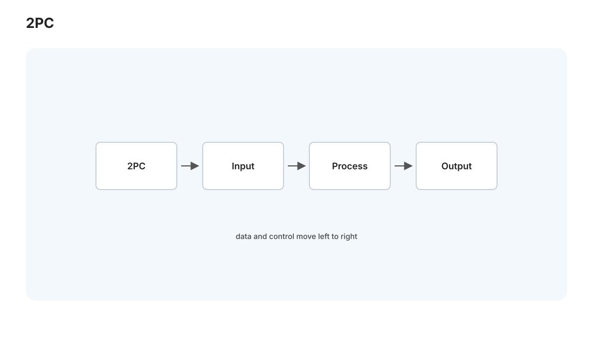
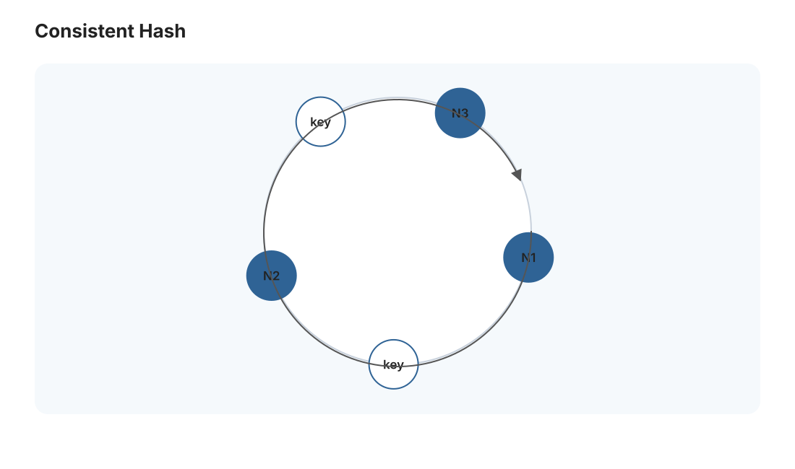
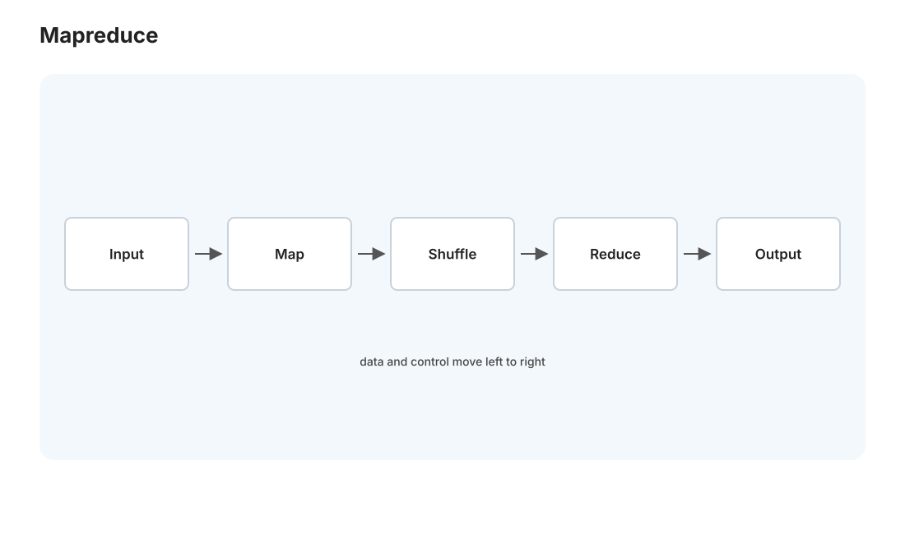

本页目录
分布式 III · 分布式事务与大系统案例
对标：MIT 6.824 / DDIA 第 7、9、10 章 ｜ 前置：dist-01/02、db-03（单机事务） 分布式的收官页，两部分：分布式事务（跨多台机器的操作怎么保持原子——比单机事务难得多）与大系统模式集（MapReduce、一致性哈希、分片、复制的经典设计，把前两页的原理拼成真实的大规模系统）。读完这条线，你就有了看懂任何"大厂系统设计"的骨架。
1. 分布式事务：跨机器的原子性

db-03 的事务在一台机器上。但如果一个操作要同时改多台机器（转账的两个账户在不同库、下单要扣库存+建订单在不同服务）——怎么保证"要么全成功要么全失败"？
两阶段提交（2PC）【机理级】：一个协调者 + 多个参与者。
- 准备阶段：协调者问所有参与者"能提交吗？"，参与者各自做好准备（写好但不提交）、回复 yes/no。
- 提交阶段：若全部 yes，协调者广播"提交"，各参与者提交；只要有一个 no，广播"回滚"。
2PC 的致命弱点——阻塞：如果协调者在阶段 2 之间崩溃，参与者们已经 say yes、锁着资源、却不知道该提交还是回滚，只能干等协调者恢复（阻塞）。这就是 2PC 被诟病的原因：协调者是单点、故障时参与者集体卡死。3PC 试图缓解但更复杂且假设更强，实践少用。根本出路是把协调者本身做成 Raft 组（dist-02）——用共识消灭单点，现代分布式数据库（Spanner、TiDB）正是"2PC 跨分片 + 每分片 Raft 复制"的组合。
替代范式——Saga：长事务拆成一串本地事务 + 对应的补偿操作（撤销）。不追求 ACID，而是"出错就补偿回滚"——用最终一致 + 业务补偿换掉分布式锁的阻塞，微服务架构的常用模式。"强一致的 2PC vs 最终一致的 Saga"又是一个 CAP 光谱上的工程选择。
2. 复制的三种拓扑
数据复制到多副本，谁能写、怎么同步——三种经典模式：
- 单主（主从）：一个主副本接受写、同步给从副本；读可以分摊到从。简单、无写冲突，但主是瓶颈和单点（故障要选主——又是共识）。Postgres 流复制、Medusa 若做读写分离就是这个。
- 多主：多个副本都能写——写吞吐高、多地就近，但写冲突要解决（后写胜/向量时钟/CRDT）。
- 无主（Dynamo 风格）：客户端写多个副本、读多个副本，用 quorum（\(W + R > N\) 保证读到最新）+ 冲突解决。高可用（AP），Cassandra/DynamoDB 的路子。
读法：复制拓扑的选择 = "写在哪、冲突怎么办"的答案，直接由 CAP 取向决定。
3. 分片与一致性哈希：数据怎么摊开

数据大到一台存不下 → 分片（sharding/partition）：按某个 key 把数据分到多台。关键问题：怎么分，才能在增删机器时少搬数据？
- 朴素哈希
hash(key) % N：N 一变（加/减机器），几乎所有 key 都要重新映射——灾难。 - 一致性哈希：把哈希空间做成一个环，机器和 key 都映射到环上，key 归属顺时针最近的机器。加一台机器只影响它相邻的一段 key，其余不动——"增删节点只搬 \(O(1/N)\) 的数据"。配虚拟节点平衡负载。这是 Dynamo、Cassandra、CDN、分布式缓存的分片基石，一个优雅的小发明解决大问题。
4. MapReduce：把并行的复杂性藏起来

Google 的 MapReduce 是大数据处理的范式奠基：程序员只写两个纯函数——Map（每条记录 → 若干中间键值对）和 Reduce（把同键的值聚合）——框架自动处理并行、分发、容错、数据搬运。
- 例：词频统计——Map 把每个词映射成
(词, 1)，Reduce 把同词的 1 求和。 - 威力：程序员完全不碰"哪台机器、怎么容错、如何 shuffle"——框架把分布式的地狱难度隐藏在两个函数背后。节点崩溃？框架重跑那个任务（要求 Map/Reduce 是幂等/无副作用的，🔗 函数式思想 pl-02）。
- 后继：Spark（内存化、DAG 执行更快）、Flink（流处理）继承了"声明计算、框架管分布式"的思想。这是"用受限的编程模型换自动的分布式"的最成功案例。
5. 系统设计的思维框架（面试 + 实战）
把整条线收成一张可复用的地图——设计任何大系统时问这几层：
- 需求与规模：读写比例、数据量、一致性要求、延迟目标（先量化，别空谈）。
- 数据分片：按什么 key 分、用一致性哈希？
- 复制与一致性：几副本、单主还是无主、CP 还是 AP？
- 缓存：哪层加缓存（CDN/应用/数据库，🔗 csapp-02 缓存思想的系统级放大）、怎么失效。
- 容错：哪些是单点、怎么故障转移、共识用在哪。
- 瓶颈与演进：先找瓶颈（通常是数据库），再针对性扩展。
"缓存、分片、复制、共识"这四件套，能拼出你见过的几乎所有大系统——从这个框架看 Medusa，它现在是"单机 Postgres + 单体后端"，未来要扩展时，就是往这四件套上加东西。
6. 练习与要点
例 1（2PC 阻塞推演） 协调者在"收齐 yes 后、发提交前"崩溃——参与者处于什么状态、为什么不能自己决定、恢复后怎么办？理解"为什么 2PC 要把协调者做成高可用"。
例 2（一致性哈希搬数据量） 环上 4 台机器加到 5 台，估算需要迁移的 key 比例（约 \(1/5\)）对比朴素取模（约全部）——一个小发明省了多少搬运，数字说话。
例 3（给 Medusa 设计扩展） 假设 Medusa 的文章量涨到 10 亿，用第 5 节框架设计：怎么分片（按时间？按 topic？）、分析查询怎么不被拖垮（读副本？列存？）——把系统设计框架用到你自己的系统未来。\(\blacksquare\)
📋 大 Project P03（第二阶段·收官）· 分片分布式 KV
P03-B · 线性一致 KV 与分片迁移（承接 P03-A Raft）：
- 学习目标：理解“共识库只是复制日志，真正的系统还要处理客户端去重、配置变更、分片迁移与线性一致读”。
- 教师提供：KV 客户端、分片控制器接口、配置变更脚本、迁移期间的故障注入测试、线性一致性 checker。
- 学生任务：① 单 Raft 组 KV：
Get/Put/Append、客户端请求去重、leader 变更重试；② shard controller：Join/Leave/Move/Query，生成分片到组的配置；③ sharded KV：按配置服务分片，配置变更时拉取/交接分片数据，迁移中不丢不重。- 一致性约束：所有写必须进入对应 Raft 组日志；重复请求必须幂等；配置变更本身也要走 Raft；迁移期间旧组和新组不能同时接受同一分片写入。
- 验收测试：并发客户端下线性一致；leader 崩溃、网络分区、配置频繁变更时无丢写；迁移期间读写可继续或按清晰错误重试；隐藏测试会检查重复 RPC 与旧 leader 响应。
- 评分重点：单组 KV 25%，配置控制器 20%，迁移协议 30%，线性一致与故障测试 25%。
- P03 总结报告：要求学生画出一次
Put(k,v)在客户端、分片路由、Raft 日志、状态机应用、分片迁移中的生命周期。
系统线到此全部完成（18 页）——CSAPP、OS、网络、数据库、分布式、还差编译。下一页进入编译 I：源代码怎么变成能运行的东西。